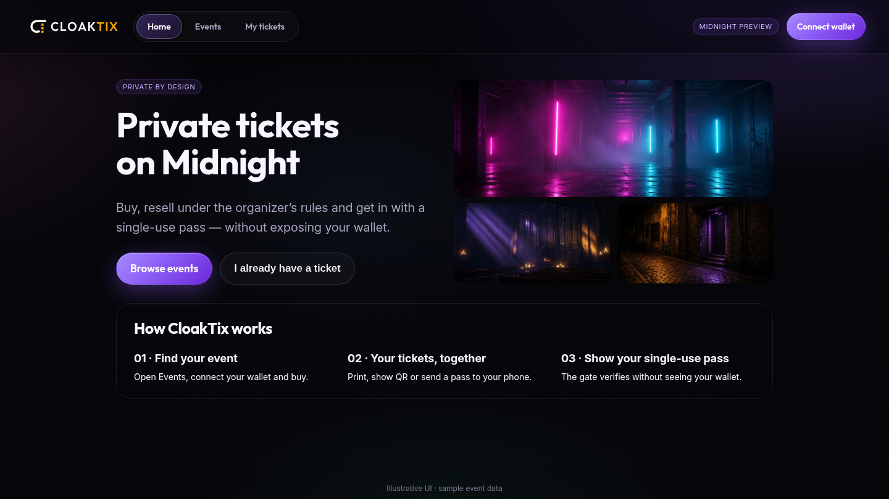
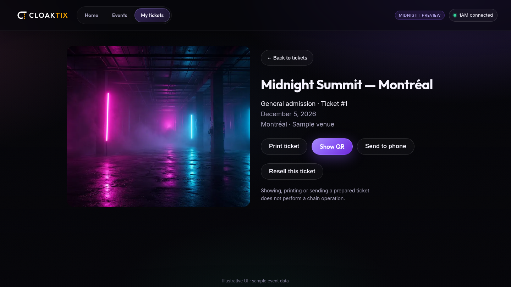
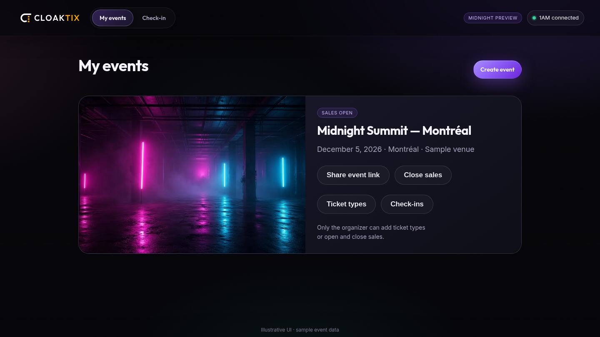
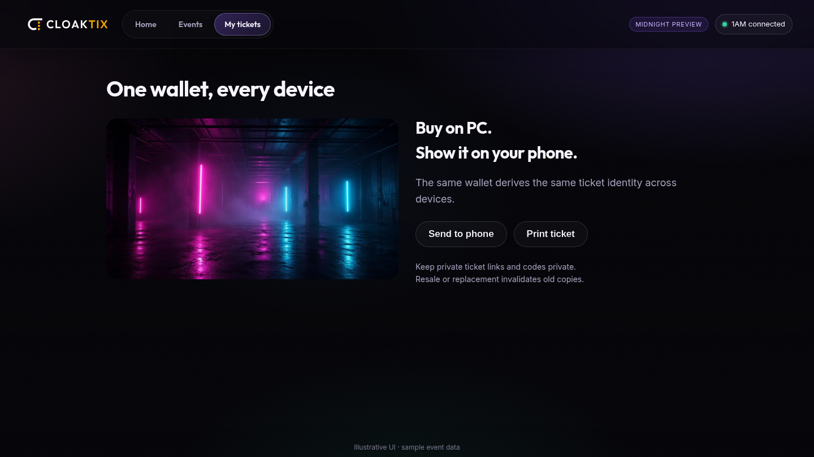

Midnight Buildathon · wave 3 · live on Midnight Preview
Private, fair tickets
on Midnight
Rules for resale.
Privacy at the door.

Current visual system · illustrative sample screens
Midnight Buildathon · wave 3 · live on Midnight Preview
Rules for resale.
Privacy at the door.

Current visual system · illustrative sample screens
Problem
Scalping puts fans and organizers at odds. Rules written in terms are not enough.
Getting into an event should not mean handing over a wallet address or identity document.
CloakTix combines fair ticket rules with private proofs.
Fan flow
Browse published events.
Connect to see live prices and buy.
Pay in NIGHT.
USD is listed; NIGHT is estimated.
Open a ticket card.
Print, Show QR or Send to phone.

Prepared ticket display does not itself perform a chain operation.
Organizer area
Wallet-based organizer identity, separate from the buyer navigation.
Required event fields: name, date, venue, description and cover.
Only the organizer can add ticket types or open and close sales.

Share event links and manage sales from My events.
Organizer controls
Resale cannot exceed the configured maximum price.
Listing is refused.
Entry remains available.
No resale price cap.
The 3% fee still applies.
An additional ZK proof requirement. Demo uses a test issuer;
not a production identity service.
Data & privacy
Organizer-signed name, date, venue, description and cover.
Zero-knowledge proofs for ticket operations and age eligibility.
Verify the pass, not the fan’s wallet address.
Walletless browsing is published metadata — not a live ledger indexer.
Connect for live prices, availability and purchase. NIGHT payments are pseudonymous, not shielded.
Business model
3% platform
Conceptual split. No payout addresses displayed.
NIGHT-only payments on Midnight Preview.
One wallet, every device

Wallet-derived ticket identity · private ticket links stay private · resale or replacement invalidates old copies
Architecture
React interface
Browser-generated ZK
1AM wallet connection
Ticket policies
Escrowed resale
Entry validation
Schema 3
NIGHT-only payments
Public contract configured
in the app
Built with OpenZeppelin Compact Contracts.
Off-chain signed metadata supplies the event catalog; wallet connection supplies live chain state.
Status & next
NIGHT-only payments · organizer area · event links · signed metadata · clickable ticket cards · QR entry · policy-based resale.
Production age issuer · shielded payments · audit · multi-gate synchronization.
cloaktix.com · @CloakTix